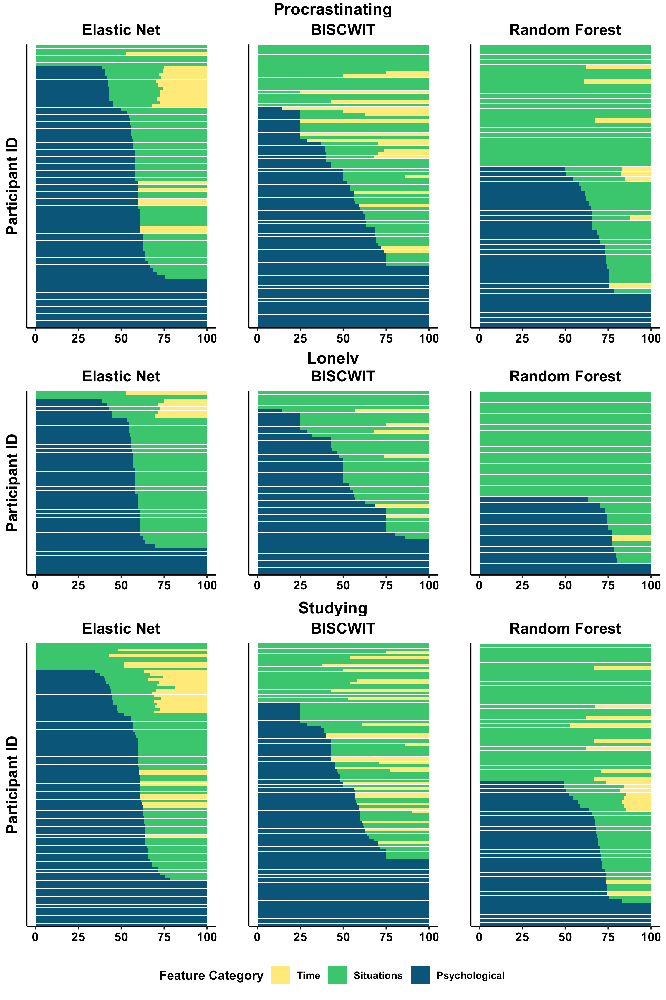

Final Project Presentation
PSC290 - Data Visualization, Winter 2025
Final Project Presentations
- Due at 9:30 AM PST on March 12, 2025 on Canvas (visualization or slides)
- Presentations will be in class on March 12 (in person or Zoom)
Format
- Up to 4 minute presentation (slides or simply the draft visualization), data blitz style, where you speak on:
- Short background (why do you / we care?)
- Research question(s; only the question[s] you are focusing on)
- Short method (what are the data? Which are you using?)
- Showcase your visualization
- (optional) lingering questions or challenges
Goal
The goal of this presentation is to:
- Provide you with feedback from both instructor and classmates on the efficacy of your draft visualization
- Clear up lingering challenges and barriers
- Allow you to practice talking about visualizations of your research
Scope
As a reminder, there are no restrictions on the scope of your presentation. Some ideas of what’s perfectly fine are as follows:
- Introducing a new kind of visualization to your area of research
- Offering improvements to “standard practice” visualizations in your area
- Setting up a procedure for a kind of visualization you’ve long wanted / needed to figure out
- Really anything that is both useful to you and displays some sort of mastery of course content
Example
I will give an example data blitz on March 5 to showcase how your presentation may look. I will use the same example (below) that I included in your proposal instructions:
As one brief example, in one of my recent papers, I was interested in the extent to which psychological, situational, and timing factors predicted different momentary experiences and behaviors using person-specific machine learning question (Beck & Jackson, 2022). There were five research questions I was answering more generally, but one was just “Do psychological, situational, time, or full feature sets perform best?” I answered this with the following visualization, which shows the relative proportion of individuals’ psychological, situational, and timing features in their best performing model using a “sequence plot” I stole from genetics (which you’ll notice looks a lot like a rotated stacked bar chart, which it is!).
